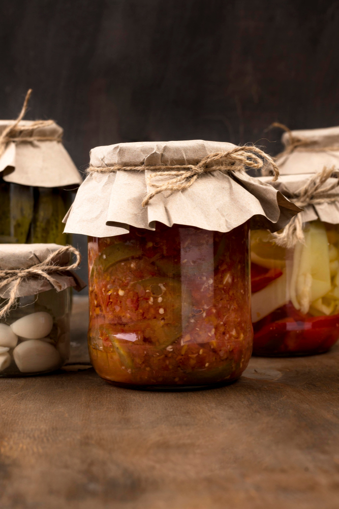

Indian Lemon Pickles

Description
Nimbu ka achar, also known as Indian Lemon Pickle, is a delightful condiment with spicy and tangy flavors. It’s often served in Indian restaurants alongside poppadoms and poppadom dips.
Ingredients
- 4 large lemons
- Salt (as needed)
- Red chili powder (adjust to taste)
Instructions
- Rinse and cut 4 lemons into small pieces.
- Mix the lemon pieces with salt and red chili powder.
- Transfer to a glass jar and store in a cool place.
Enjoy your zesty lemon pickle! 🍋🌶️